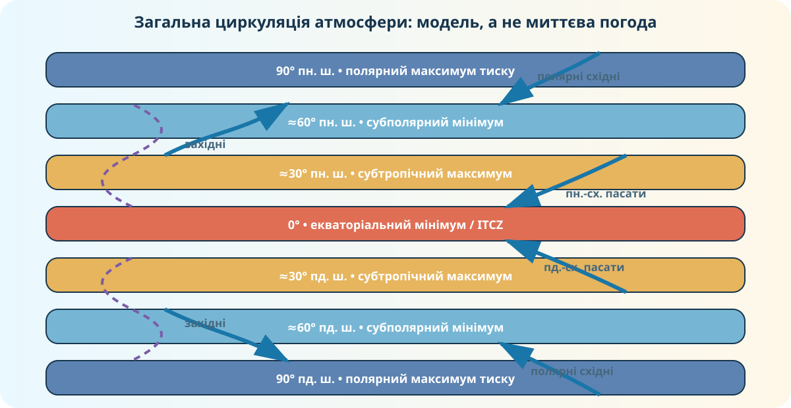

1. Дослідницьке питання
Чому в різних широтах переважають різні напрями вітру і як це пов’язано з властивостями повітряних мас?
Реальна карта вітру.
Пояси тиску та обертання Землі.
Властивості повітряної маси за місцем її формування.
2. Жива Земля: спостерігаємо вітер зараз
NullSchool показує поточні та прогнозні глобальні поля вітру на основі даних GFS/NCEP. Збільшуйте масштаб, обертайте глобус і порівнюйте різні широти.
Відкрити NullSchool у новій вкладці →
Знайдіть Атлантику. Який загальний напрям поверхневого вітру переважає?
Порівняйте Північну Атлантику і Південний океан. Який компонент напряму домінує?
Чому миттєва карта не виглядає як ідеальні паралельні смуги?
Джерело: earth.nullschool.net; шар Wind @ Surface, модель GFS / NCEP / US National Weather Service.
3. Реальні модельні дані NASA: вітер на різних висотах

NASA Scientific Visualization Studio, Global Surface- and Upper-Level Winds. Дані реаналізу MERRA: нижній рівень 850 hPa і верхній 250 hPa.
Чи однаково спрямовані й однаково швидкі повітряні потоки біля поверхні та у верхній тропосфері?
Чому для шкільної схеми постійних вітрів ми спрощуємо реальну циркуляцію?
4. Інтерактив: де утворилася повітряна маса?
Оберіть параметри й натисніть кнопку.
Узимку до України надходить повітря з Арктики. Очікувана зміна температури?
Тропічне континентальне повітря надходить із посушливого суходолу.
Помірне морське повітря надходить із Атлантики.
5. Інтерактив: виведіть постійний вітер із широти
Оберіть півкулю та широту. Модель покаже переважний пояс вітрів. Це кліматична закономірність, а не гарантія напряму вітру в конкретну годину.
Задайте широту.
6. Схема після спостережень: перевірте свою модель

7. Теорія — тепер систематизуємо
Повітряна маса
Великий об’єм повітря з відносно однорідними властивостями температури та вологості, сформованими над певною територією або акваторією.
Постійні вітри
Переважні вітри глобальних поясів циркуляції: пасати, західні вітри помірних широт і полярні східні.
Чому вітер відхиляється?
Повітря рухається від вищого тиску до нижчого, але обертання Землі спричиняє коріолісове відхилення: праворуч у Північній півкулі й ліворуч у Південній.
Дмуть від субтропічних максимумів ≈30° до екваторіального мінімуму. У Північній півкулі — переважно північно-східні, у Південній — південно-східні.
У помірних широтах переважає перенесення із заходу на схід; у Південній півкулі над океаном воно особливо виразне.
NOAA пояснює глобальні пояси через підняття нагрітого повітря біля екватора, опускання поблизу 30° та коріолісове відхилення; NASA показує реальну багаторівневу циркуляцію у даних MERRA.
8. Коротке відео: глобальна циркуляція атмосфери
Відео пояснює клітини Гадлея, Феррела й полярні клітини та пов’язує їх із погодою і кліматом.
9. Доказове завдання: знайдіть помилку
Теза: «Якщо на карті NullSchool сьогодні над Україною вітер східний, то правило про західні вітри помірних широт неправильне».
10. CER — Claim, Evidence, Reasoning
Питання: «Чи можна за місцем формування повітряної маси передбачити, як вона змінить погоду території, куди прийде?»
11. Домашнє завдання
§14. Відкрийте електронний підручник Гільберг Т., Довгань А., Совенко В., 7 клас, 2024.
Відкрийте NullSchool двічі з інтервалом у кілька годин або порівняйте два різні регіони. Зафіксуйте місце, напрям вітру й пояс постійних вітрів. Напишіть 4–5 речень: що відповідає глобальній закономірності, а що є локальним відхиленням.
12. Тест — 10 балів
Спочатку введіть дані учня/учениці. Без них тест не відкриється.